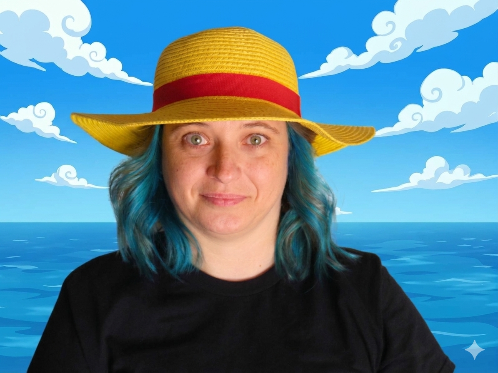

Hi, I'm Karina.
Computer scientist, educator, and Head of Learning Content at PrairieLearn.
I care about making computing and mathematics easier to learn, and helping instructors create meaningful learning experiences.

About me
I have spent more than a decade working across academia, industry, and educational technology. I have a Ph.D. in Computer Science from UNICAMP, and my interests include computing education, assessment, mathematical theory, and open educational resources.
Before joining PrairieLearn, I taught at the University of British Columbia and Fluminense Federal University. Earlier in my career, I worked as a software engineering intern at Google.
Where I've worked
Head of Learning Content
Assistant Professor of Teaching
Adjunct Professor
Software Engineering Intern
What I work on
My work brings together computing education, active learning and assessment, and open and equitable access to STEM education. Along the way, I've been fortunate to receive a UBC Faculty Teaching Award, recognition as a UBC Open Education Resource Champion, and the Google Brazil Women in Technology Award.
Things I've worked on
A few areas and projects that connect my interests in computing, teaching, and making learning more accessible.
Developing reusable learning content and supporting instructors in creating engaging, automatically graded assessments.
Supporting gender equity and inclusion in computing through outreach, mentorship, and research. I co-founded Include Meninas UFF, a project encouraging girls and young women to explore computer science.
Research and teaching projects on active learning, logic circuits, autograding, and student experiences in computing courses.
A little more personally
Outside of work, I'm a certified cinephile who loves exploring cinema and keeping up with the sprawling world of One Piece. At home, I'm supervised by Lilly and Betty, my two street dogs, and you'll often find me listening to a wonderfully chaotic playlist that jumps from heavy metal (Metallica) to '90s pop perfection (the Spice Girls).
WORDS I COME BACK TO
« Le principal fléau de l’humanité n’est pas l’ignorance mais le refus de savoir. »— Simone de BeauvoirGet in touch
You can reach me at karina@prairielearn.com, find my work on GitHub.